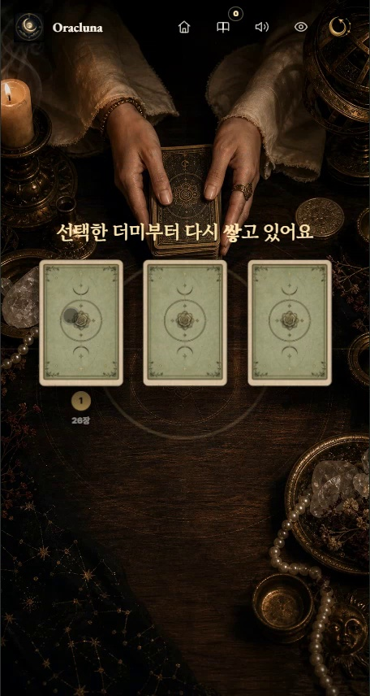
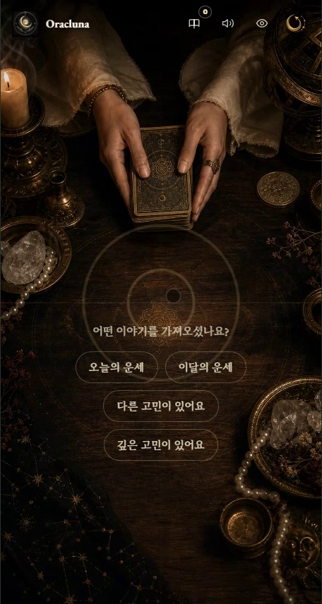
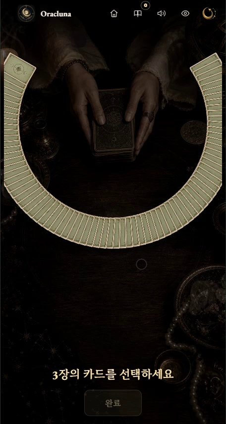
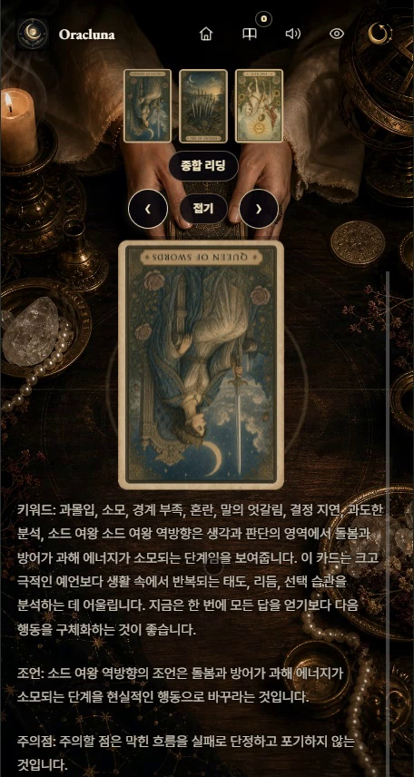

// three-way cut
고른 묶음부터 세 묶음을 다시 쌓습니다.
세 묶음 중 하나를 고르면 선택한 묶음부터 차례로 재결합합니다. 화면에 놓인 카드를 그대로 이어 움직여 셔플과 선택 단계가 갑자기 끊기지 않게 했습니다.
concern → cut → 78-card wheel → save / share
고민의 종류를 고르고, 카드를 섞고 자른 뒤, 78장 카드 휠에서 원하는 카드를 직접 고릅니다. 선택한 카드의 배열 위치와 정·역방향, 검색된 타로 지식을 함께 사용해 질문에 답하고 저장과 공유까지 이어지는 모바일 리딩 웹앱입니다.

세로형 모바일 화면에서 질문을 정하고 카드를 선택해 결과를 확인하는 Oracluna Tarot의 실제 사용 모습을 담았습니다.
YouTube에서 보기오늘·이달 운세는 바로 리딩을 시작하고, 다른 고민과 깊은 고민은 짧은 질문을 받은 뒤 1·3·7장 배열로 이어집니다. 한 화면에는 지금 필요한 선택만 남겼습니다.


세 묶음 중 하나를 고르면 선택한 묶음부터 차례로 재결합합니다. 화면에 놓인 카드를 그대로 이어 움직여 셔플과 선택 단계가 갑자기 끊기지 않게 했습니다.

손가락으로 휠을 돌리고 카드 자체를 누르면 앞으로 빠져나와 선택 칸에 놓입니다. 카드 수가 달라져도 같은 조작을 유지하도록 휠의 회전 범위와 선택 위치를 함께 맞췄습니다.
셔플·컷·휠 선택·공개를 명시적인 단계로 관리하고, 이동 중인 카드와 원본 카드의 생명주기를 분리했습니다. 모션이 끝나지 않으면 watchdog이 잔류 레이어를 정리합니다.
공유 버튼을 누른 뒤 포스터를 만들면 모바일의 사용자 제스처 유효 시간이 끝날 수 있었습니다. 결과가 완성될 때 제한된 크기의 Blob을 미리 만들어 즉시 전달합니다.
첫 사용자 제스처에서 AudioContext를 활성화하고 동작별 재생과 중복 방지 시간을 나눴습니다. 셔플과 카드 공개 피드백이 iOS에서도 끊기지 않게 했습니다.
모델에 질문, 배열 위치, 카드, 정·역방향, 검색된 카드 정보를 함께 전달합니다. 중복된 검색 결과는 합치고, 현재 선택과 다음 행동을 설명하도록 출력 규칙을 정했습니다.


해석 결과를 저장하고 다시 열거나 삭제할 수 있으며, 이미지로 공유할 수도 있습니다. Node 서버는 요청 검증, 속도 제한, 정적 캐시, health endpoint를 담당하고 Docker와 NAS 리버스 프록시에서 실행합니다.
78 png · 78 svg · 78 metadata · data validation · api/ui smoke test